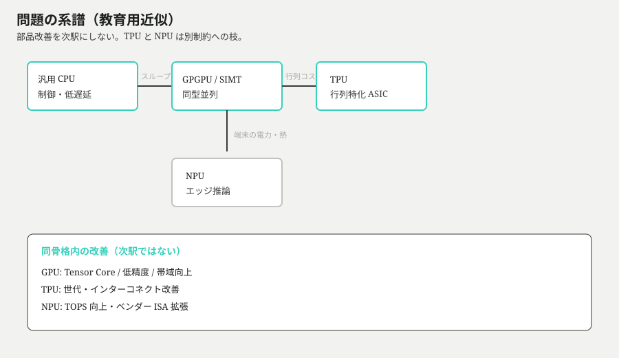
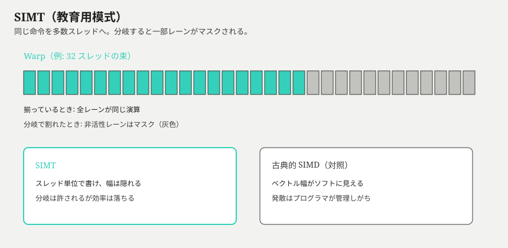
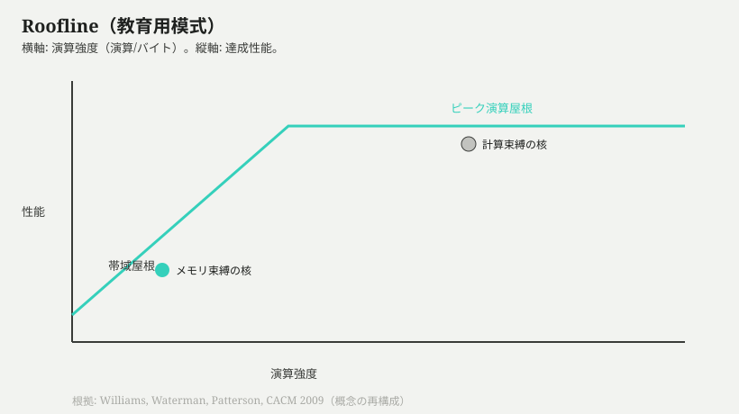
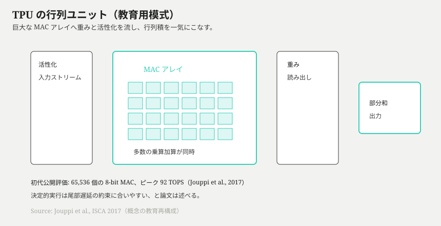
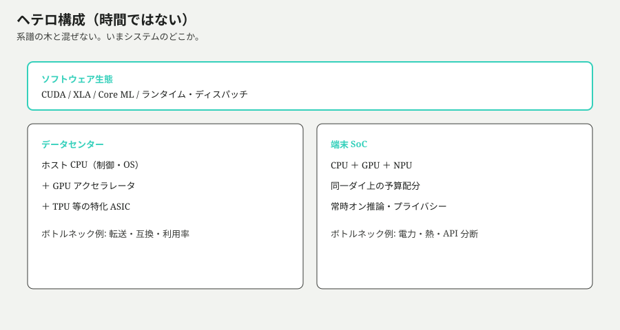
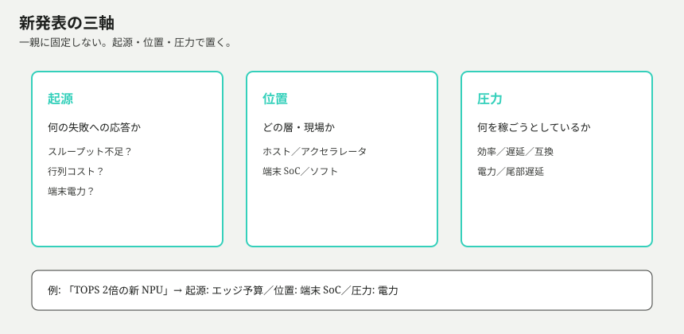
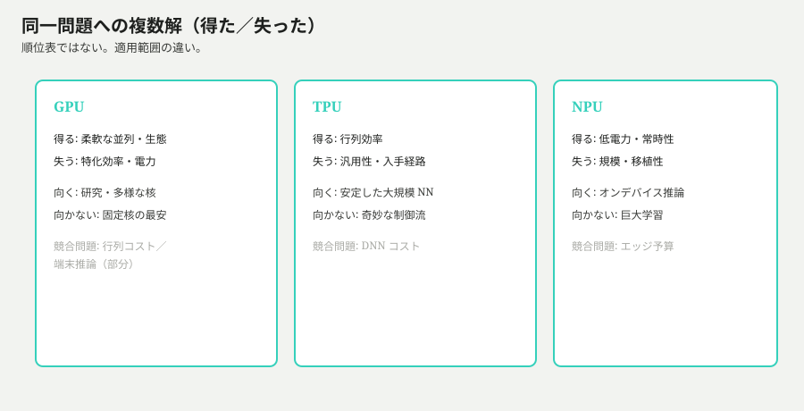

入口
同じノート PC でブラウザを開き、写真を補正し、生成 AI を少し動かすだけなのに、画面のどこかには CPU、GPU、NPU という言葉が並ぶ。クラウドの料金表に行けば GPU と TPU が別メニューになり、スマホの発表では「Neural Engine」や「AI accelerator」が速度の理由として語られる。どれも計算をする部品に見える。では、なぜ一つにまとまらないのか。
さらにややこしいのは、速さの言葉が一種類ではないことだ。アプリの反応が速い、動画がなめらか、学習が早く終わる、バッテリが減らない、クラウド料金が安い。これらは全部「速い」と呼ばれることがあるが、同じ制約を測っているとは限らない。CPU が遅いから GPU、GPU より AI だから TPU、端末だから NPU、という名前の階段にしてしまうと、何を得て何を捨てたのかが見えなくなる。
この記事では、部品名のカタログを先に配らない。入口で結論も固定しない。先に置くのは、読者が現実の発表文や製品表を見たときに、どの問題が前景にあるのかを自分で切り分けるための道筋である。技術名は、その問題に押し出されて必要になったところでだけ導入する。
この記事で獲得する操作
知識量ではなく、次の操作ができることを目標にする。
- 存在理由をたどる — CPU、GPU、TPU、NPU を「後継順位」ではなく、どの制約への応答として生まれたかで説明できる。
- 速さを分解する — ピーク演算、メモリ帯域、遅延、電力、ソフトウェア互換を混ぜずに読む。
- 地図を選ぶ — 系譜の木、現行システムの構成、判断軸を取り違えずに使い分ける。
- 新しい発表を座標付けする — それが新しい骨格なのか、既存骨格の改善なのか、単なる測定条件の違いなのかを保留つきで言える。
そのために、次の六つの問題を順に解いていく。
- なぜ「一つの速い CPU」だけでは足りなくなったのか。 分岐・OS・低遅延に強い設計が、同型大量演算では何を露呈させるのか。
- GPU は何を並列化し、何を制御のまま残したのか。 同じ命令を多数のデータへ流すと、どこでスループットが増え、どこで効率が落ちるのか。
- TPU は行列演算に何を特化し、何を捨てたのか。 支配的な演算にシリコンを寄せると、効率と柔軟性の交換はどう変わるのか。
- NPU は端末のどの制約に応答しているのか。 電力、遅延、熱、プライバシーが、クラウドの特化とは違う形をなぜ要求するのか。
- いまのシステムでは誰が仕事を割り振り、何がボトルネックになるのか。 CPU、GPU、TPU、NPU が並ぶとき、単体性能ではなく分担が問題になるのはなぜか。
- 新しい発表をどう座標付けし、自分は何を選ぶか。 TOPS や TFLOPS の数字、ソフト互換、電力制約を、どの順序で判断材料にするのか。
身近な違和感はまだ解けていない。タスクマネージャや製品発表に並ぶ四つの名前は、同じ競走の順位なのか、それとも別々の圧力に対する違う道具なのか。
なぜ CPU だけでは足りないか
アプリを一つ開く。クリックにすぐ反応してほしい。ネットワークが遅れても画面は固まらないでほしい。ファイル保存中でも音は途切れないでほしい。この種類の期待に、汎用 CPU は長い時間よく応えてきた。ところが同じ機械に、何百万個もの画素変換、巨大な配列演算、ニューラルネットの重み計算を投げ込むと、別の不満が出る。反応は悪くないのに、全体の仕事量が終わらない。
ここで固定する問いは一つである。制御に強い CPU は、なぜ大量の同型演算では足りなく見えるのか。
汎用 CPU
汎用 CPUとは、命令列を正しい順序で進め、分岐、割り込み、OS、メモリ階層、周辺機器との調停を低遅延で扱う実行装置である。重要なのは「何でも最速」ではなく、「次に何をすべきかが毎瞬間変わる仕事を、安全に、短い待ち時間で進める」ことだ。条件分岐が多いプログラム、ユーザー入力、ファイル I/O、例外処理、プロセス切り替えは、計算の中身より制御の正しさが先に来る。
Google Cloud の TPU 解説が CPU を説明するときも、von Neumann 型の柔軟性——どんなソフトでも載せられること——を利点として先に置く。同時に、計算のたびにメモリへ値を読み書きする往復が、スループットの上限になりうることも認める(*1)。この往復そのものが「悪い」のではない。分岐や例外が多い仕事では、柔軟な制御が価値になる。だが、同じ式を何百万回も回す仕事では、制御の豊かさは毎回必要とは限らない。
この設計で得るものは、汎用性と低遅延である。OS は CPU を中心に動き、他の計算部品に仕事を渡すときも、最初の段取りは CPU 側に残る。一方で失うものもある。チップ面積と電力のかなりの部分は、分岐予測、キャッシュ、投機実行、命令の依存関係処理など、制御をうまく見せるために使われる。画素ごとに同じ式を適用する、行列の各要素へ同じ積和を走らせる、という仕事では、その制御の豊かさは全要素に毎回必要とは限らない。

図で先に見ておくべきなのは、CPU が「古い駅」だから退場するのではない、という点である。CPU は現在もホスト側の制御として残る。問題は、CPU の得意さがそのまま大量同型演算の効率にはならないことだ。
Amdahl の直列上限
Amdahl の直列上限とは、仕事の一部がどれだけ速く並列化されても、並列化できない直列部分が全体の加速を頭打ちにする、という限界である。Gene Amdahl は 1967 年、単一プロセッサ方式の妥当性を論じる中で、並列化可能な割合だけを見ても全体速度は決まらないことを示した(*2)。式で書けば、全体のうち直列割合を \(s\)、並列部分を \(N\) 倍速くできるとき、理想化した加速は \(1 / (s + (1-s)/N)\) に近づく。\(N\) を無限に増やしても、上限は \(1/s\) で止まる。
この式は「CPU はだめ」という結論ではない。むしろ、並列化の前に仕事の形を見よ、という警告である。たとえば画像処理の一部は画素ごとに独立だが、ファイルを読む、処理範囲を決める、結果を集める、エラーを処理する、ユーザーへ返す、という段取りは直列に残りやすい。CPU を何個も足しても、直列部分が 10% なら理想上限は 10 倍であり、直列部分が 1% でも 100 倍で止まる。現実には通信、同期、キャッシュの取り合いがさらに上限を下げる。
並列の「形」を見るための古典的なラベルもある。Flynn は 1972 年、命令ストリームとデータストリームの多重度で計算機組織を分類した(*3)。単一命令・単一データ（SISD）に近い逐次制御、単一命令・複数データ（SIMD）寄りの一斉演算、複数命令・複数データ（MIMD）寄りの協調などである。ここでの目的は分類表の暗記ではない。分岐だらけの制御と、同じ命令を多数のデータへ流す仕事は、そもそも並列の入れ方が違う、という感覚を持つことだ。後の GPU の SIMT は、この感覚の上で「スレッド単位の見え方」と「束ねた発行」を両立させる。
シミュレーションを開く — 直列割合が残ると加速は頭打ちになる
このシミュレーションで触るべきつまみは、プロセッサ数ではなく直列割合である。数を増やしても曲線が寝る瞬間が来る。その寝方が見えたとき、「もっと速い CPU を買う」だけでは解けない種類の問題が現れる。
スループット問題
スループット問題とは、一つの応答をどれだけ短く返すかではなく、単位時間あたりにどれだけ多くの同型作業を処理できるかが支配的になる問題である。遅延は一件の待ち時間、スループットは流量である。レジで一人を素早く通す能力と、同じ作業を百人分さばく能力は違う。CPU は前者の多くに強い。だが、各データに同じ演算を適用する仕事では、命令制御を贅沢に持つ少数の強いコアより、単純な演算器を多数並べ、同じ流れで動かすほうが面積と電力を使いやすい。
ここで CPU が失うのは「計算できる能力」ではない。CPU でも画像処理や行列演算はできる。失うのは、同じ電力、同じ面積、同じ時間で大量に流す効率である。反対に CPU が得たものはまだ必要だ。OS を動かし、メモリを割り当て、デバイスへ仕事を投げ、例外を扱い、結果を回収する役は消えない。したがって第一の分岐は、CPU から別の部品へ「置き換わる」話ではなく、制御と流量を分けて考えざるをえなくなる話である。
適用範囲もここで切れる。分岐だらけの小さな処理、低遅延の対話、OS に近い仕事では CPU の設計がそのまま効く。大きな配列、画素、粒子、行列のように、同じ演算を大量のデータへかける仕事では、CPU だけではスループットの要求に追いつきにくい。Amdahl の上限が示すのは、並列化できる部分を見つけても、直列部分と段取りが必ず全体に戻ってくるということだ。
制御に強い部品が残り、同型大量演算だけが別の圧力をかける。この二つを同じ「速さ」で呼ぶかぎり、CPU と他のプロセッサの関係は見誤られる。
GPU は何を並列化したか
画像の全画素を少し明るくする。三次元空間の頂点を同じ式で変換する。巨大な配列の各要素に同じ関数をかける。ひとつひとつは単純でも、数が多すぎる。CPU は段取りを整えられるが、すべての要素に豊かな分岐制御を毎回持ち込むと、必要以上に重い道具で砂を一粒ずつ運ぶような状態になる。
ここで固定する問いは一つである。GPU は何を一斉に流し、何を一斉には流せなかったのか。
GPGPU / SIMT
GPGPUとは、グラフィックス用に発達した GPU を、描画以外の汎用計算にも使う考え方である。中核は SIMT（Single Instruction, Multiple Threads） である。SIMT では、プログラマは多数のスレッドがそれぞれスカラーなプログラムを走らせるように書く。GPU 側では近いスレッド群が warp として束ねられ、同じ命令を多数のデータへ流す。
Lindholm らが 2008 年に記述した NVIDIA Tesla アーキテクチャでは、warp は最大 32 スレッドの束であり、分岐で経路が割れると、取られた経路を順に実行し、該当しないレーンを無効化する(4)。現行の CUDA Programming Guide も同じ骨格を保つ。SIMT はスレッド単位の分岐を許すが、SIMD のように固定データ幅をプログラマに露出しない。利用率が最大になるのは、warp 内の制御経路がそろうときである(5)。

この定義で大事なのは、GPU が「何でも並列化する」わけではないことだ。並列化したのは、同じ命令を多数のデータへ適用する形である。各スレッドが別々の制御判断を持ち、warp の中で分岐先が割れると、GPU は両方の経路を順に実行し、該当しないレーンを止める。つまり、制御の自由は残るが、自由すぎる制御は効率を落とす。
得たものは明確である。多数の軽い演算器と高いメモリ帯域を使い、画素、頂点、粒子、配列、行列の一部のような同型大量演算を高いスループットで流せる。失ったものも明確である。分岐だらけの小さな処理、逐次依存が強い処理、頻繁な同期を必要とする処理では、GPU の幅が埋まらない。GPU は CPU を不要にしたのではなく、CPU が段取りを作ったあと、大量に似た仕事を流す場所を作った。
スループット志向とホスト／デバイス
スループット志向とは、一つのスレッドを最短時間で終わらせるより、同時に抱える多数のスレッド全体で、単位時間あたりの完了量を大きくする設計である。CPU が複雑な制御で単一スレッドの待ちを減らすなら、GPU は多数のスレッドを用意し、あるスレッドがメモリ待ちになった間に別のスレッドを進める。個々の待ち時間を消すのではなく、待ち時間を他の仕事で隠す。
CUDA のプログラミングモデルは、最初からヘテロジニアスである。アプリは CPU（ホスト）で始まり、GPU（デバイス）へデータを移し、カーネルを起動し、結果を回収する(*5)。ホストとデバイスが同時に動けるとしても、データ移動と起動の固定費は消えない。直列の段取りは CPU に残し、並列化できる大きな塊だけを GPU に渡す。すると、CPU と GPU の境界そのものが実務上の問題になる。転送と起動が演算より大きければ、GPU のピーク性能は見かけ倒しになる。
だから GPU 向きの仕事は、単に「計算が重い」では足りない。データが大量にあり、同じ形の演算が多く、分岐がそろい、メモリ移動の固定費を償却できることが必要になる。ここで速さは、コア数や TFLOPS の数字だけでは読めない。演算器がどれだけ多くても、データが届かなければ待つだけである。
メモリ壁と Roofline
プロセッサが速くなっても、DRAM が追いつかなければ効果は薄れる——Wulf と McKee が 1995 年に指摘した「メモリ壁」である(6)。Rooflineは、その感覚を現場の屋根として描くモデルだ。Williams、Waterman、Patterson らは 2009 年、演算強度（運ぶデータ量あたりの演算量）を横軸に置き、帯域で決まる斜めの屋根と、ピーク演算で決まる水平の屋根で実効上限を可視化した(7)。

Roofline が教えるのは、GPU の限界を「演算器が足りない」だけで考えないことだ。たとえば配列を一度読み、少し計算して一度書くだけの処理は、演算強度が低い。どれほど多くの演算器を持つ GPU でも、メモリからデータを運ぶ速度が屋根になる。反対に、一度読み込んだデータを何度も使い回して多くの積和を行う処理は、演算強度が高くなり、ピーク演算に近づきやすい。
シミュレーションを開く — 演算強度が低いとピーク演算に届かない
このシミュレーションで触るべきつまみは、ピーク演算だけではない。演算強度を低くしたまま演算器の数を増やしても、点は斜めの屋根の下に張り付く。GPU の幅は、データ再利用とメモリ配置がそろったときに初めて効く。逆にいえば、GPU で遅いから GPU が不要なのではなく、仕事の形が GPU の屋根に合っていない可能性がある。
GPU 内の Tensor Core などは、この骨格の内側で演算密度を上げる改善であり、別の系譜駅ではない(*8)。焦点は名前ではなく、演算強度、メモリ帯域、制御のそろい方である。
GPU が得たのは、同型大量演算を高い流量で処理する場所である。失ったのは、分岐と逐次依存に対する素直さである。グラフィックス、科学計算、機械学習の多くで中心になる一方、OS の制御、細かな対話処理、分岐の多い処理は CPU 側に残りやすい。「どちらが速いか」より、「どの屋根に当たっているか」と聞くほうが判断に近い。
TPU は何を特化したか
GPU まで来ると、同じ形の計算を大量に流す道は見えた。けれど、ニューラルネットワークの推論がデータセンターの実務に入り込むと、別の摩擦が前に出る。行列積は多い。しかもリクエストは待ってくれない。検索、翻訳、写真分類、推薦のようなサービスでは、平均が速いだけでは足りず、遅い一部のリクエストが利用者体験を壊す。大量の推論を安く、少ない電力で、99パーセンタイル遅延まで読める形で処理したい。この圧力が TPU を生んだ。
ここで特化されたのは「AI」という曖昧な看板ではない。支配的な演算、つまりニューラルネットワークに現れる行列とベクトルの積である。
ドメイン特化とシストリック
汎用プロセッサの性能向上が鈍ると、大きな効率改善はドメイン特化へ寄らざるをえない——Hennessy と Patterson は、いわゆる「新しい黄金時代」の議論でそう位置づけた(*9)。ドメイン特化アーキテクチャ（DSA）は、単機能の固定回路そのものというより、特定領域の仕事に合わせてシリコンとソフトを寄せる加速器のクラスである。GPU も広い意味では DSA の例に入るが、さらに狭い形——行列積の繰り返し——へ寄せたものが TPU である。
その寄せ方の古典が シストリック配列である。Kung と Leiserson は、同一の演算素子が規則正しく計算し、データを隣へ流す網としてシストリックを定式化した(10)。ポイントは、演算のたびに遠いメモリへ往復し続けるのではなく、データが素子のあいだを脈打つように流れることだ。Google Cloud の現行説明でも、CPU や GPU が演算ごとにレジスタや共有メモリへ触りやすいのに対し、TPU の行列ユニットは乗算のあいだメモリへ戻らず、結果を次の積和へ渡す、と対比される(11)。
Google の ISCA 2017 論文が分析した初代 TPU は、データセンター内の推論向け ASIC として説明される。中心には 65,536 個の 8-bit MAC があり、ピークは 92 TOPS とされた。MAC は multiply-accumulate、掛け算して足し込む小さな作業単位だ。CPU や GPU が多種類の命令と制御を残したまま行列を処理するのに対し、TPU はこの小さな作業を巨大な面として敷き詰めた(*12)。

汎用性を削ると何が得られるか
汎用プロセッサは、どんな仕事が来てもそこそこ処理できるように、命令の解釈、分岐、キャッシュ、例外、仮想化、スケジューリングなどの仕組みを持つ。これは価値である。同時に、同じ掛け算と足し算を何億回も繰り返す場面では、価値でない部分にもシリコン面積と電力が使われる。TPU の発想は、その余白を削り、対象ドメインで何度も現れる形に面積を戻すことだった。
Jouppi らの測定では、当時のサーバ級 CPU と GPU に対して、TPU はニューラルネットワーク推論で 15–30 倍の性能差を示し、TOPS/W では 30–80 倍と報告された。もちろん、この数字は「すべての計算で TPU が勝つ」という意味ではない。測っている対象が推論ワークロードで、設計もそこに寄せてあるから勝つ。第一原理の言い方に戻すと、入力問題の形が支配的に同じなら、一般性を捨てた回路は無駄な動きを減らせる(*12)。
もう一つ重要なのは、論文が tail latency、つまり遅い側の遅延にも注意している点だ。大規模サービスでは、一部の処理が極端に遅れると、全体の応答が詰まる。GPU は高スループットだが、キャッシュ、アウトオブオーダー、マルチスレッド、プリフェッチのような平均スループット向け最適化は、保証したい遅延とは相性が悪い場合がある。TPU はそうした時間変動の多い機構を削り、ソフトウェア管理の大きなオンチップメモリと決定的に近い実行を重視した。平均速度だけでなく、遅延の尾を読めることも、データセンター推論の費用に効く(*12)。
TPU は GPU の別名ではない
GPU と TPU はどちらも大量演算を扱う。ここで混乱が生まれる。GPU は CPU から見て、同型データ並列を大きく引き受ける汎用並列プロセッサになった。SIMT、広いメモリ帯域、多数のスレッド、成熟したソフトウェア生態を持つ。一方 TPU は、ニューラルネットワークの行列演算という狭い形に寄せた ASIC である。GPU の内部に Tensor Core のような行列ユニットが入っても、それは GPU 骨格の改善であって、系譜上の「GPU の次の種類」ではない。同様に、TPU は GPU が名前を変えたものではない。
この区別は、製品ニュースを読むときに効く。「新世代 GPU はテンソル演算が速い」という発表は、GPU 系の improves として読む。「推論コストを下げるために行列演算へシリコンを固定した ASIC」は、TPU 的なドメイン特化として読む。どちらもニューラルネットワークを処理できるが、起源が違う。片方は汎用並列プロセッサの中に行列加速を取り込む道、もう片方は支配的演算へ設計を固定する道である。
現行の Cloud TPU では、MXU（行列乗算ユニット）、ベクトル／スカラユニット、HBM、チップ間インターコネクト、Pod／スライスといった層が公開されている(*11)。これは「TPU という名前の魔法」ではなく、行列特化の骨格の上に、学習規模や疎な埋め込みなどへの improves と構成が積み上がっている、と読む。
勝ち方は費用の形に依存する
TPU の勝ち方は、絶対王者の勝ち方ではない。大量の安定した推論、モデル形状の予測可能性、データセンター内での統制、ソフトウェアスタックを合わせ込める環境があると、特化の利益が出やすい。演算の形が変わり続ける、未対応演算が多い、小さな実験を頻繁に動かす、既存ツールとの互換が最重要、という現場では、GPU の柔軟性が効く。
得たものは明確だ。MAC を巨大に並べ、データ移動を設計し、決定的な実行へ寄せることで、ニューラルネットワーク推論のコストとエネルギーを下げた。失ったものも明確だ。汎用命令の広さ、変化するモデルへの柔軟な追随、広いソフトウェア生態の自由度は削られる。だから TPU は「GPU より新しいから上」という駅ではなく、GPU と同じニューラルネットワーク費用問題に対する別の解であり、特定条件では GPU と競合する。
クラウドで GPU 時間と TPU 時間が別メニューになる理由も、ここから読める。売られているのは名前ではなく、制約の違う実行経路である。GPU は広い並列計算の重力を持ち、TPU は行列推論、そして後続世代では学習を含む特化経路を持つ。読者が見るべき問いは、「どちらが偉いか」ではない。「自分のワークロードは、支配的な行列演算へ固定してよいほど安定しているか」「電力、遅延、費用のどれが痛いか」「ソフトウェアをその経路へ合わせ込めるか」である。
NPU はどの制約への応答か
スマートフォンで写真を撮る。声で起こす。キーボードが次の語を出す。イヤホンが周囲の音を処理する。これらは巨大なデータセンターの一括推論とは違う圧力を受けている。バッテリは小さい。手の中の筐体は熱くできない。処理は一回だけでなく、画面の裏で何度も起きる。カメラ、マイク、位置、個人の文脈を扱うので、すべてをクラウドへ送る判断にも抵抗がある。この端末側の制約が、NPU を必要にした。
NPU は「小さい TPU」ではない。どちらもニューラルネットワークを速くしたいが、痛点が違う。TPU はデータセンターで大量推論の費用とエネルギーを下げるため、支配的な行列演算にシリコンを寄せた。NPU は端末の電力、熱、遅延、プライバシーの予算内で、オンデバイス推論を成立させるために SoC の中へ置かれる。大きな建物で電力と冷却を管理する話と、ポケットの中で常時オンに近い処理を続ける話は、同じ「AI アクセラレータ」という語で包むには圧力が違いすぎる。Google の Coral 系 FAQ も、TPU をクラウド向け、NPU を電力制約下のエッジ推論向け、と役割を分けて書く(*13)。

端末では平均速度より予算が先に来る
クラウドでは、同じモデルを大量のリクエストに対して処理し、サーバ台数、電力、応答遅延をまとめて最適化する。端末では、処理の粒度がもっと生活に近い。画面が点いていない間も音声トリガーを待つ。カメラのプレビュー中に被写体を認識する。写真アプリが端末内の画像を分類する。ここで毎回 GPU を大きく起こすと、瞬間的には速くても、電力と熱の予算を食う。CPU だけでは効率が足りない。だから、低電力でニューラルネットワーク推論を受け持つ専用ユニットが SoC の中に入る。
公開されている一次例として、Google の Edge TPU がある。Coral の FAQ とモジュール資料は、単体で約 4 TOPS（固定小数点）、おおよそ 2 W、すなわち約 2 TOPS/W を示す。主用途は推論であり、Cloud TPU のような大規模学習向けの速度とは役割が違う(14)(15)。数値を覚えて自慢するためではなく、「エッジ特化はピークの絶対値ではなく、ワットあたりと常時オン可能性で測られる」ことを固定するためだ。
低ビット幅（量子化）も、ここで強制される部品になる。Edge TPU 向けモデルは、整数量子化を経てからコンパイルされる(*14)。精度を少し譲り、演算密度と帯域と電力を買う。この交換は、データセンターの混合精度改善（improves）と似て見えるが、動機の重心が端末の予算にある。
端末の公開経路を読む
公開資料はベンダー名のカタログではない。読むべきは「入力がどの層を通って、どこで測るか」である。
典型的なオンデバイス経路は、だいたい次の順になる。センサやアプリ入力が来る → OS／ランタイムが仕事を切る → モデルが量子化・変換される → NPU（または GPU／CPU）が推論する → 対応できない演算は CPU／GPU へ落ちる → 体感は熱とバッテリと遅延で測る。ボトルネックは「NPU の TOPS」単体ではなく、変換の成否、フォールバック、DRAM 往復、熱スロットルのどこかに現れやすい。
この経路を支える公開例として、Apple Core ML は CPU／GPU／Neural Engine への割当を MLComputeUnits で明示する(16)。Qualcomm Hexagon NPU は Scalar＋Vector＋Tensor とソフト管理 TCM を公開し、DRAM 往復を減らす低電力経路として読む(17)(18)。Arm Ethos-N も CPU／GPU 併用と DRAM 削減を前提にする(19)。細部は違うが、制約集合——電力、熱、帯域、常時オン——は共通に近い。内部マイクロアーキの推測はしない。
端末 NPU が得たもの
第一に、ローカルな遅延を得る。入力をクラウドへ送り、結果を待つ経路は、通信状態とサーバ側混雑に左右される。端末内で推論できれば、カメラのフレーム、マイク入力、キーボード候補のような短いループを閉じやすい。
第二に、電力を得る。ニューラルネットワーク推論の一部を、CPU や GPU より低い電力で処理できるなら、同じ体験をバッテリの中へ収めやすい。常時オンに近い機能では、ピーク性能よりも「起こし続けられるか」が効く。
第三に、プライバシー寄りの設計余地を得る。すべての処理を端末内で完結できるわけではない。大きなモデル、クラウド検索、共有された文脈は依然として外部計算を使う。それでも、音声、画像、個人データの一部を端末内で処理できることは、設計上の選択肢を増やす。
端末 NPU が失ったもの
失うものも同じくらい大きい。まず、モデル規模である。端末 SoC の面積、メモリ、電力、熱は限られる。巨大モデルをそのまま載せる道ではなく、量子化、蒸留、分割、キャッシュ、クラウドとの協調が必要になる。だから、NPU を積んだ端末があることは、データセンター級のモデルを何でも単独実行できることを意味しない。
次に、移植性である。GPU には CUDA のような強い重力があり、TPU には XLA やクラウド環境に寄った経路がある。端末 NPU はさらにベンダーごとの差が出やすい。Apple、Qualcomm、PC ベンダー、OS ランタイムがそれぞれ抽象層を提供しても、対応演算、精度、メモリ制約、性能特性は一致しない。アプリ開発者にとっては、同じモデルがすべての端末で同じ速さ、同じ精度、同じ電力で動くとは限らない。
最後に、測定の難しさである。NPU の TOPS が大きくても、実アプリの体感は、メモリ移動、前処理、後処理、OS のスケジューリング、熱によるクロック制約、モデル変換の成否に左右される。端末では特に、瞬間のピークよりも、熱がたまった後、画面が暗い時、他アプリが動いている時にどう振る舞うかが重要になる。NPU は魔法の箱ではなく、端末予算に合わせた一つの役割である。
読み方を変える
NPU のニュースを読むときは、まず場所を見る。データセンターのラックに置かれるのか、スマホや PC の SoC に入るのか。次に圧力を見る。クラウド費用を下げたいのか、バッテリを守りたいのか、遅延を隠したいのか、個人データを端末に残したいのか。最後に失うものを見る。対応モデルは狭くならないか。API は分断されないか。実効性能はピーク TOPS と同じ方向を向いているか。
Edge TPU のように公開されたエッジ ASIC を見ても、「Cloud TPU を小さくしただけ」と読まない。Coral 自身が、Cloud TPU と Edge TPU を速度と役割で分けて説明している(*14)。同じ「テンソル」という言葉でも、起源の圧力が違えば、得たもの／失ったものの組も違う。
この読み方をすると、NPU は CPU、GPU、TPU の後ろに直線で並ぶ「第四世代プロセッサ」ではなくなる。端末という場所で、CPU と GPU だけでは電力と熱に合わなくなった推論を引き受ける部品になる。SoC の中の構成要素として、ランタイムに呼ばれ、モデル変換に縛られ、バッテリと熱の範囲で働く。名前の新しさではなく、置かれた制約が NPU の輪郭を決める。
いまの位置を層で読む
CPU、GPU、TPU、NPU を名前の列として覚えると、新しい発表が来るたびに列が伸びてしまう。「新しい駅は何か」という問いだけが残り、実際の判断に使えない。ここで必要なのは、ひとつの万能地図ではなく、用途の違う地図を選ぶ操作である。木は近似である。厳密には、技術は多所属のグラフにいる。教育用の木は、入口で迷わないための読み方であり、所属が一意であるという主張ではない。
最初に分けるべきなのは、系譜の木と構成の木だ。系譜の木は「どの問題から生まれたか」を読む。構成の木は「いまシステムのどこに置かれているか」を読む。この二つを一枚で無宣言に混ぜると、GPU 内の Tensor Core を新しいプロセッサ種別に見せたり、端末 SoC の NPU を CPU、GPU、TPU の直線的な後継に見せたりする。地図の辺の意味を先に選ぶことが、誤読を減らす。
系譜の木で読む
系譜の木を使う合図は、「何の解として生まれたのか」が知りたい時だ。CPU は制御、分岐、OS、低遅延に強い汎用実行として立つ。データ並列の仕事が増えると、直列部分とスループット不足が痛くなり、GPU が同型演算の大量並列を引き受ける。ニューラルネットワークの行列演算が費用と電力を支配すると、TPU のような行列特化 ASIC が出る。端末で電力、熱、常時オン、プライバシーが効くと、NPU が SoC 内の推論アクセラレータとして出る。
この木で読むニュースは、発明や製品の「起源」を問うニュースである。「推論コストを下げるための新 ASIC」「端末内 AI を低電力化する新ユニット」「GPU 内の行列演算を強化する新機能」。最後の例は注意が要る。GPU 内の Tensor Core や世代ごとの性能向上は、GPU 骨格の改善であって、系譜上の新しい駅ではない。系譜図に置くなら、新枝ではなく improves と読む。
構成の木で読む
構成の木を使う合図は、「実際のシステムでどこが何を担当するか」が知りたい時だ。いまの計算機は、単体チップの優劣だけでは動かない。CPU がホストとして OS、ドライバ、制御、入出力を扱う。GPU や TPU はアクセラレータ層で大きな並列計算を引き受ける。スマホや PC の edge SoC では、CPU、GPU、NPU、メモリ、画像処理、信号処理が同じパッケージ内で協調する。software 層では、CUDA、XLA、Core ML、ドライバ、ランタイム、モデル変換が仕事を割り振る。
この図で読める問いは、「どれが一番速いか」ではない。「誰が仕事を投げるか」「データはどこを通るか」「前処理と後処理はどの層か」「対応していない演算はどこへ落ちるか」である。たとえば Core ML は、開発者がモデルをオンデバイスで実行するための抽象を提供し、利用可能な計算資源へ処理を割り当てる。CUDA は GPU に対するプログラミングモデルと実行基盤を提供する。Google Cloud TPU の公開資料は、TPU が単独の名前ではなく、ホスト、ランタイム、ネットワーク、ソフトウェアと組で使われることを示す。Qualcomm の Hexagon 文書も、端末 SoC 内で AI、信号処理、低電力処理が構成として読まれることを示す。[^cuda-docs][^cloud-tpu][^apple-coreml-cmap][^qualcomm-cmap]
五つの層で置く
host 層は、CPU、OS、ドライバ、入出力の場所である。低遅延の制御、例外、ファイル、ネットワーク、人間とのインタラクションがここに残る。accelerator 層は、GPU や TPU のように、ホストから仕事を渡され、大きな並列計算を処理する場所である。edge SoC 層は、端末の中で CPU、GPU、NPU などが同居し、熱と電力の小さな箱の中で働く場所である。software 層は、これらを読者のアプリから見える形にする場所である。evaluation 層は、ピーク数字ではなく Roofline、実ワークロード、電力、テール遅延で読む場所である。
ニュースを診断する時は、まず地図を選ぶ。発表が「どの問題に応答したか」を語っているなら系譜の木を選ぶ。発表が「製品の中でどこに載るか」を語っているなら構成の木を選ぶ。発表が「TOPS が何倍」「新 API 対応」「クラウドと端末の両方」と言うなら、判断軸の地図へ進む。数字は地図ではない。数字は、どの層で、どの圧力に対して測られたかが決まって初めて読める。Edge TPU のような公開エッジ ASIC も、系譜では NPU 枝、構成では edge SoC、評価では電力あたり、と層を分けて置く。

Origin、Locus、Pressure
Origin は起源である。何の解として生まれたのか。CPU の弱点からか、GPU の汎用並列のオーバーヘッドからか、データセンター推論の費用からか、端末の電力と熱からか。起源を見れば、名前が似ていても枝を分けられる。
Locus は位置である。host、accelerator、edge SoC、software のどこに置かれるのか。クラウド TPU の話は accelerator と software の組で読む。スマホ NPU の話は edge SoC と software の組で読む。GPU の新命令や Tensor Core の強化は、accelerator 層の GPU 内改善として読む。
Pressure は圧力である。何を稼ごうとしているのか。スループット、効率、電力、遅延、互換、プライバシーのどれが前景か。たとえば「TOPS 2倍」は Pressure の一部にすぎない。実アプリで効くかは、モデル形状、メモリ移動、対応演算、ランタイム、熱制約と組で決まる。
診断の型は短い。ニュースを一文で読む。次に、系譜か構成か判断軸かを選ぶ。Origin に「何の制約への応答か」を書く。Locus に「どの層か」を書く。Pressure に「何を稼ぐのか」を書く。最後に、得たもの、失ったもの、適用範囲を書く。この手順を踏むと、「新しいから上」「数字が大きいから勝ち」「AI チップだから同じ」という反射から離れられる。
四部品の比較台帳
章をまたいで覚えた内容を、ここで一度横並びに戻す。順位表ではなく、得た／失った／適用の台帳である。
| 得たもの | 失ったもの | 向く仕事 | 向かない仕事 | 見る指標 | よくある誤読 | |
|---|---|---|---|---|---|---|
| CPU | 制御・低遅延・汎用 | 同型大量演算の面積／電力効率 | OS、分岐、段取り、対話 | 画素・行列の巨大流量 | 遅延、直列残差 | 「古いから退場」 |
| GPU | 同型並列のスループット | 分岐割れ・転送固定費の素直さ | グラフィックス、科学計算、DNN 実務 | 細かい分岐だらけの制御 | 演算強度、帯域、利用率 | 「AI 専用チップ」単独視 |
| TPU | 行列特化の費用／エネルギー | 柔軟性・広いソフト生態 | 安定した大規模 NN | 頻繁に形が変わる試作 | TOPS/W、テール遅延、単価 | 「GPU の次世代」 |
| NPU | 端末予算内の推論 | モデル規模・移植性 | 常時オン、低遅延、端末内処理 | データセンター級の巨大モデル単独 | TOPS/W、熱、持続 | 「小さい TPU」 |
この表は入口である。自分の仕事を一行選ぶときは、Pressure（何が痛いか）と Locus（どこで動くか）を先に書いてから戻る。
[^cuda-docs]: NVIDIA, CUDA C++ Programming Guide, Programming Model and SIMT descriptions. https://docs.nvidia.com/cuda/cuda-programming-guide/01-introduction/programming-model.html
[^cloud-tpu]: Google Cloud, Cloud TPU architecture overview. https://docs.cloud.google.com/tpu/docs/system-architecture-tpu-vm
[^apple-coreml-cmap]: Apple Developer Documentation, Core ML. https://developer.apple.com/documentation/coreml
[^qualcomm-cmap]: Qualcomm, Hexagon processors and AI acceleration product documentation. https://www.qualcomm.com/processors/hexagon
数字とスローガンを分解する
ここまでで、CPU、GPU、TPU、NPU は「どれが最強か」という一列の順位ではなく、別々の圧力に応じて形を変えた解だと見てきた。
しかし製品発表や社内の会話は、たいていその形で出てこない。
「TOPS が二倍になった」
「結局 GPU だけあればいい」
「専用チップは速いが、ソフトウェアに閉じ込められる」
どれも完全な嘘ではない。だから厄介である。嘘なら捨てればよい。半分正しい言葉は、どの半分が事実で、どの半分が測定の前提で、どの半分が価値判断なのかを分けないと、人を動かすスローガンになる。
この章の仕事は、著者の勝者を決めることではない。数字とスローガンを、共通事実、争点、測定、価値、利害、反証条件へ分解することだ。

共有できる事実
まず、争う前に共有できる土台を置く。
第一に、ピーク性能は実行性能ではない。Roofline モデルは、実効性能がピーク演算能力だけでなく、演算強度とメモリ帯域の上限にも縛られることを示す。演算器が多くても、データを運べなければ屋根に届かない。
第二に、GPU は「AI 専用チップ」ではなく、大量の同型並列を高スループットで処理するための汎用並列アクセラレータとして強い。NVIDIA の CUDA Programming Guide が説明する SIMT のモデルは、スレッド単位のプログラミングを保ちながら、多数スレッドをハードウェア上で束ねて実行する。
第三に、TPU のようなドメイン特化 ASIC は、支配的な演算形が安定しているときに大きな効率を得やすい。Jouppi らの 2017 年 TPU 論文は、データセンター推論でニューラルネットワークの計算が支配的になり、コストとエネルギーが重要になったことを、ドメイン特化アーキテクチャの動機としている。
第四に、NPU はデータセンター TPU の小型版というより、端末の電力、熱、遅延、プライバシー制約への応答として読むほうが誤りにくい。Apple Core ML や Qualcomm Hexagon のような製品一次情報は、オンデバイス推論をベンダーの実行経路に載せる現実を示している。
ここまでは、対立する立場の人たちもほぼ同意できる。争いは、この事実をどの測定へ載せ、どの価値を優先し、どの失敗を許容するかで始まる。
争点カード1 TOPSだけで比べる
共通事実
TOPS は、一定条件の下で一秒に何兆回の演算を処理できるかを示すピーク指標である。特に低精度の整数演算や行列演算では、広告として大きな数字を作りやすい。
TOPS が無意味なのではない。演算器の供給量を粗く見るには役に立つ。NPU や TPU のような行列寄りの部品では、設計がどの程度その形に寄っているかを示す入口にもなる。
争点
問題は、TOPS を「あなたの仕事が二倍速くなる」という意味に変換してよいかである。
実ワークロードは、演算だけでできていない。前処理、データ移動、メモリアクセス、分岐、同期、量子化の精度損失、ランタイムの対応、モデル形状との相性を含む。Roofline の言葉で言えば、ピーク演算の屋根だけを見ても、メモリ帯域の屋根や演算強度が見えていなければ、どの屋根にぶつかっているのかわからない。
測定
TOPS だけの比較を分解するには、最低でも次を聞く。
| 聞くこと | なぜ必要か |
|---|---|
| 精度は何か | INT8、INT4、FP16、FP8 では意味が違う |
| 疎性や特殊条件込みか | 条件付きピークは実ワークロードで再現しにくい |
| メモリ帯域と容量は足りるか | 演算器が空転する可能性がある |
| 対象モデルで測ったか | 行列密度、バッチ、シーケンス長で効き方が変わる |
| 電力込みか | 端末では速さより持続可能性が先に制約になる |
| ソフトが対応しているか | 対応しない演算器は、存在しても使われない |
価値と利害
ベンダーは大きく、簡単で、比較表に入れやすい数字を好む。買う側は、短時間で候補を絞るために単一指標を欲しがる。メディアは見出しにしやすい数字を求める。
一方、現場の価値は必ずしもピークではない。クラウドなら、学習時間、推論単価、供給量、既存コードの移植コストが効く。端末なら、熱で性能が落ちないこと、バッテリを食わないこと、プライバシー境界を越えないことが効く。
反証条件
TOPS 比較が有効だと言える条件はある。対象ワークロードが同じ精度、同じモデル形状、同じデータ供給条件で、演算器が主要ボトルネックになっており、ソフトウェアがその演算器を十分使えるなら、TOPS は強い近似になる。
逆に、実ワークロードで速度、電力、単価、精度のどれも TOPS と相関しないなら、その比較は広告としては使えても判断としては弱い。
争点カード2 GPUだけで十分か
共通事実
GPU は強い。大量の同型演算に強く、プログラミング環境が成熟し、DNN 学習と推論の多くを支えてきた。CUDA 生態系は、ライブラリ、コンパイラ、プロファイラ、デバッガ、既存コード、開発者経験をまとめて引き寄せる。
この重力は単なる心理ではない。ある仕事が GPU で十分速く、開発者が GPU の道具に慣れており、運用も GPU 前提で組まれているなら、新しい ASIC のピーク効率は、移行コストに負けることがある。
争点
争点は「GPU が使えるか」ではなく、「GPU の柔軟性と生態系が、専用効率の差をいつ上回るか」である。
GPU-first の立場は、変化するモデル、未確定の演算、研究開発、複数ワークロードの混在に強い。専用 ASIC 優先の立場は、支配的な演算形が安定し、規模が大きく、エネルギーや単価が厳しいときに強い。
測定
ここで見るべき測定は、単体チップの速度だけではない。
| 測定 | GPU-only 論に有利なとき | 専用枝に有利なとき |
|---|---|---|
| ワークロードの多様性 | モデルや演算が頻繁に変わる | 大半が同じ行列演算に集中する |
| 開発時間 | 既存 CUDA 資産が大きい | コンパイラやランタイムが十分成熟している |
| 電力効率 | 電力制約が緩い | 電力や冷却費が主要制約 |
| 利用率 | GPU を複数用途で埋められる | 専用機を高稼働で回せる |
| 供給と運用 | 調達と運用が既存 GPU に寄っている | 専用クラスタを使い切る規模がある |
価値と利害
GPU-only は、失敗時の逃げ道を買う価値観に近い。まだモデルが変わる、ワークロードが混ざる、人員が限られる、既存コードが大きい。その場合、最速部品より、変化に耐える部品が価値になる。
専用枝は、繰り返し現れる支配的問題へシリコンを寄せる価値観に近い。電力と単価が効き、十分な規模があり、実行する演算が安定しているなら、柔軟性を捨てたぶんだけ効率を買える。
反証条件
GPU-only 論は、同じ仕事を専用 ASIC や NPU が、移行コストを含めても一貫して低単価、低電力、低遅延で処理し、さらにソフトウェアの穴が小さいと示されたときに弱くなる。
専用優先論は、対象モデルが頻繁に変わり、コンパイラや対応演算の不足で実利用率が落ち、GPU の成熟した道具のほうが総コストを下げると示されたときに弱くなる。
争点カード3 ソフトウェアロックインか、特化効率か
共通事実
アクセラレータは、シリコンだけでは使われない。ドライバ、コンパイラ、ランタイム、ライブラリ、フレームワーク、プロファイラが揃って、初めて現場の仕事に接続される。
CUDA の重力はこの意味で強い。NVIDIA の公式ドキュメントは、プログラミングモデル、メモリモデル、カーネル、ライブラリ、性能解析までを一つの道具圏として提供している。これは性能そのものではないが、性能を引き出す確率を高める。
同時に、Jouppi らの TPU 論文が示したドメイン特化の動機も強い。汎用ハードウェア上で支配的ワークロードを走らせ続けると、コストとエネルギーの無駄が大きくなる。そこで、ニューラルネットワーク推論というドメインにシリコンを合わせる発想が出る。
争点
争点は「ロックインは悪、専用は善」でも「CUDA は現実、専用は夢」でもない。
本当の問いは、どちらの閉じ込めを受け入れるかである。GPU 生態系に寄ると、ツールと人材の重力に助けられるが、特定ベンダーの価格、供給、API 変化に依存する。専用 ASIC に寄ると、支配的仕事では効率を得られるが、対応しないモデルや演算が出たときに逃げにくい。
測定
この争点では、チップのベンチマークだけでなく、移植と保守を測る。
| 見るもの | 問い |
|---|---|
| 対応演算 | 自分のモデルの演算がネイティブに載るか |
| コンパイラ成熟度 | 期待通りに分割、融合、量子化してくれるか |
| デバッグ可能性 | 遅い理由や精度劣化の理由を追えるか |
| 人材 | チームが扱える道具か |
| 移行費 | 既存コードと運用をどれだけ書き換えるか |
| 退出費 | 将来別の部品へ移る余地があるか |
価値と利害
ベンダーは自社の生態系に開発者を留めたい。利用者は、学習済みの道具を捨てたくない。組織は、短期の納期と長期の交渉力を同時に欲しがる。
したがって、ロックインの議論は道徳だけでは決まらない。短期の開発速度を重視するなら、重力のある生態系は味方になる。長期の単価、供給、電力を重視するなら、専用効率や複数経路の確保が味方になる。
反証条件
「CUDA 重力が勝つ」という主張は、代替の専用経路が同等の開発体験を持ち、主要ワークロードで明確に低コストかつ低電力を示し、退出費も低いときに弱くなる。
「専用効率が勝つ」という主張は、モデル変化や未対応演算のために実効利用率が落ち、移植費とデバッグ費を含めると GPU 生態系のほうが速く安いと示されたときに弱くなる。
争点カード4 NPUは小さいTPUか
共通事実
TPU も NPU も、ニューラルネットワークの演算を専用に寄せる。どちらも「汎用 CPU だけでは足りない」への応答であり、行列やテンソル寄りの演算にシリコンを使う。
同時に、公開一次情報は役割を分ける。Cloud TPU はデータセンターの学習／大規模推論向け、Edge TPU は低電力デバイスの推論向け、と Coral の FAQ は明示する。Google の Coral NPU FAQ も、TPU＝クラウド、NPU＝電力制約下のエッジ推論、と定義を分ける。
争点
争点は「どちらも AI 向けか」ではない。「制約集合が同じだから、片方はもう片方の縮小版か」である。
小さい TPU 説は、同じ行列特化をスケールダウンしただけだと読む。別枝説は、データセンターの費用・テール遅延と、端末のバッテリ・熱・常時オン・プライバシーは、得たもの／失ったものの組が違うと読む。
測定
| 聞くこと | 小さいTPU説に有利 | 別枝説に有利 |
|---|---|---|
| 主な制約 | 同じ行列費用の縮小 | 電力・熱・常時オンが前景 |
| 成功指標 | 絶対 TOPS／学習規模 | TOPS/W、持続、局所遅延 |
| ソフトウェア | クラウド経路の縮小移植 | 端末 SDK・量子化・SoC 統合 |
| 失敗モード | モデル規模不足だけ | API 分断・熱スロットル・対応演算欠落 |
価値と利害
マーケは「AI チップ」一語で棚をまとめたい。読者は短い比喩で覚えたい。実装者は、クラウド特化と端末特化を同じ設計図で語ると誤発注する。
反証条件
NPU＝小さい TPU 説は、端末ユニットがクラウドと同じ成功指標（大規模学習スループット、Pod 規模、同一ソフト経路）で測られ、電力制約が本質でないと示されたときに強くなる。
別枝説は、端末で電力・熱・プライバシーを外してもクラウド特化と同じ選択になる、と示されたときに弱くなる。
分解の型
争点カードを読むときは、次の順に手を動かす。
共有事実を先に固定する
どちらの陣営も認める事実を書く。例として、GPU は成熟した並列生態系を持つ、TPU はドメイン特化で効率を狙う、NPU は端末制約に応答する、TOPS はピーク指標である、など。
共有事実を置かずに価値判断へ飛ぶと、相手の事実認識を攻撃しているのか、価値の優先順位を争っているのかが見えなくなる。
争点を一文に縮める
「どっちが速いか」ではなく、「何を含めた速さか」と書く。
「GPU か TPU か」ではなく、「ワークロード変化への柔軟性と、安定ワークロードでの効率のどちらを優先するか」と書く。
争点は、チップ名ではなく、得たいものと捨てるものの衝突として書く。
測定を現場に戻す
測定は、値そのものより条件が大事である。
同じ TOPS でも、精度、モデル、バッチサイズ、メモリ、ランタイム、電力制限が違えば意味が変わる。同じ GPU でも、研究の探索、量産推論、端末常時オンでは意味が変わる。
測定は「何を測ったか」だけでなく、「何を測っていないか」まで含めて読む。
価値と利害を隠さない
現場の判断には価値が入る。速さ、単価、電力、移植性、供給安定性、プライバシー、学習コストのどれを重く見るかは、問題の外側では決まらない。
利害も入る。ベンダーは自社の強い数字を出す。買う側は調達しやすいものを選ぶ。開発者は扱える道具を好む。研究者は新しい枝を見たい。どれも人間の弱さというより、判断に混ざる力である。
反証条件を書く
最後に、自分の暫定見解が何で崩れるかを書く。
反証条件のない意見は、方針ではなく所属表明になりやすい。「この条件なら GPU-first を撤回する」「この測定なら TOPS 比較を信用する」「この移植費なら専用 ASIC を見送る」と書けると、議論はスローガンから設計へ戻る。
出口命題
アクセラレータの論争は、ピーク数字や陣営名ではなく、共有事実、測定条件、価値、利害、反証条件に分けたときだけ、自分の判断材料になる。
placement drill
ここでは、まだ見たことのない発表を、名前の印象で判断せずに地図へ置く練習をする。
目的は正解当てではない。発表文のどの部分が起源を示し、どの部分が位置を示し、どの部分が圧力を示すのかを分けることだ。さらに、その発表を系譜の木で読むべきか、構成の木で読むべきかを選ぶ。
input_material
次の架空プレスリリースを読む。
新製品「AstraX」は、次世代 AI アクセラレータである。前世代比で TOPS が二倍になり、クラウド推論とエッジ端末の両方に対応する。新しい行列演算ユニットにより、大規模言語モデル、画像認識、音声処理を高速化する。開発者は既存の主要フレームワークから AstraX を利用できる。AstraX は、データセンターからスマートデバイスまで、あらゆる AI 処理を変える。
この文章には、便利な情報と、まだ曖昧な情報が混ざっている。「次世代」「二倍」「クラウドとエッジ」「あらゆる AI」は、判断を早める言葉である。早める言葉ほど、いったん分解する。
operation
手順1 三つの軸へ置く
以下の表を自分で埋める。
| 軸 | 書くこと | ヒント |
|---|---|---|
| Origin | 何の先行失敗や制約への応答として生まれたか | CPU の限界か、GPU の効率か、端末予算か、ソフト互換か |
| Locus | どの層、どの現場に置かれているか | データセンター・アクセラレータか、端末 SoC か、ソフト層か、複数か |
| Pressure | 何を稼ごうとしているか | スループット、電力、遅延、単価、互換、プライバシーのどれか |
埋めるときは、発表文に書いてあることと、自分が推測したことを分ける。
例として、「TOPS が二倍」は発表文に書いてある事実である。しかし「実ワークロードが二倍速い」は推測であり、まだ測定が必要である。
手順2 系譜の木か構成の木かを選ぶ
次に、この発表をどの地図で読むべきか選ぶ。
| 選択肢 | 使う場面 |
|---|---|
| 系譜の木 | その部品が、どの問題から生まれた新しい解の枝なのかを問うとき |
| 構成の木 | その部品が、現行システムのどの層に置かれ、誰と組むのかを問うとき |
| 判断軸 | 発表文の曖昧な主張を、Origin、Locus、Pressure に分けるとき |
この素材では、最初に判断軸を使い、その後で構成の木を使うのが自然である。理由は、「クラウドとエッジの両方」という主張が、単一の歴史的後継というより、どの層へ配置されるかの問題を含んでいるからだ。
ただし、もし追加情報として「従来 GPU では電力効率が足りなかったクラウド推論向けに、行列演算だけへ特化した ASIC を作った」と書かれていたら、系譜の木で TPU 型の枝として読む価値が出る。
手順3 lineage と composition を混ぜない
次の二文を別々に扱う。
「AstraX は GPU の後継である」
「AstraX は CPU ホスト、GPU、NPU と一緒にシステムへ載る」
前者は系譜の主張である。後者は構成の主張である。二つを一枚の図で無宣言に混ぜると、同じ部品が「歴史の次駅」なのか「現行システムの一部」なのかわからなくなる。
練習では、次を選ぶ。
| 問い | 自分の選択 |
|---|---|
| この発表は新しいプロセッサ種別の枝か | はい、いいえ、保留 |
| それとも既存枝の改善か | GPU 内改善、TPU 系改善、NPU 系改善、その他、保留 |
| その判断に必要な追加情報は何か | 対応演算、実測、電力、メモリ、ランタイム、配置層など |
手順4 improves か新しい枝かを判定する
新しい行列演算ユニットがあるだけでは、新しいプロセッサ種別とは限らない。
GPU に Tensor Core のような行列ユニットが追加される場合、それは GPU 骨格内の improves として読むほうが安全である。データセンター GPU の世代が進み、低精度行列演算が増え、TOPS が上がっても、それだけで CPU、GPU、TPU、NPU に並ぶ新しい枝が生まれたとは言えない。
新しい枝と言うには、少なくとも次のような情報が要る。
| 判定材料 | 見たい内容 |
|---|---|
| 支配問題 | 既存枝では何が足りなかったのか |
| 実行モデル | SIMT、シストリック、固定機能、DSP 系など何が中心か |
| 配置層 | データセンター、端末 SoC、ホスト側、ランタイム層のどこか |
| 失うもの | 柔軟性、互換性、モデル規模、精度、退出可能性の何を捨てるか |
| 反証 | 既存 GPU や NPU の世代改善として説明できないか |
self_check
チェック1 TOPSを速度に変換していないか
「TOPS が二倍」と「自分のワークロードが二倍速い」を同じ文として扱っていないか確認する。
もし同じにしていたら、精度、モデル形状、メモリ帯域、ランタイム対応、電力制限を書き足す。
チェック2 Tensor-Core的な改善を新種にしていないか
新しい行列演算ユニットを見ただけで、「GPU の次に来る新しいプロセッサ種別」と書いていないか確認する。
GPU 内の行列ユニット追加、低精度対応、世代ごとの TOPS 向上は、まず improves として読む。新枝にするのは、起源、位置、圧力、失うものが既存枝では説明しにくいときである。
チェック3 クラウドとエッジを一つの場所に潰していないか
「クラウドとエッジの両方に対応」と書いてあるとき、同じチップが同じ意味で両方に置かれるとは限らない。
クラウドではデータセンター・アクセラレータとして、端末では SoC 内 NPU として、あるいは同名ブランドの別実装として現れるかもしれない。Locus を一つに決められないなら、「複数の可能性がある」と書くほうが正確である。
チェック4 NPUを小さいTPUと書いていないか
端末向け推論ユニットを、データセンター TPU の縮小版として一語で片づけていないか確認する。電力・熱・常時オン・プライバシーが起源なら、系譜上は別枝として置く。
チェック5 自分の保留理由を書いたか
足りない情報があるとき、無理に結論を出さない。
「実ワークロードと電力が不明なので、TOPS 二倍を実効改善とはまだ置けない」
「配置層が曖昧なので、系譜の新枝ではなく構成上の候補として保留する」
このように、保留の理由まで書ければ、この演習は成功である。
自分の暫定意見を書く
判断章で最初にすることは、著者の意見を読むことではない。自分の文脈を書くことである。
CPU、GPU、TPU、NPU の議論は、抽象的に聞くと「どれが一番よいか」に見える。しかし実際の判断は、いつも場所を持っている。仕事でクラウド費用を下げたいのか。研究で新しいモデルを試したいのか。趣味でローカル推論を動かしたいのか。授業で概念を理解したいのか。スマホのバッテリを守りたいのか。
文脈が違えば、同じ事実から違う結論が出る。違う結論が出ること自体は失敗ではない。失敗は、文脈を書かずに結論だけを一般化することである。
まず自分で書く
次の空欄を、自分の状況で埋める。
文脈
自分はいま、どの立場でこの話を使うのか。
| 項目 | 記入 |
|---|---|
| 文脈 | 仕事、学習、研究、趣味、購入検討、運用、その他 |
| 扱う仕事 | 学習、推論、画像、音声、LLM、ゲーム、科学計算、日常アプリなど |
| 主な場所 | クラウド、社内サーバ、手元 PC、スマホ、組込み、授業資料など |
| 失敗したら困ること | 遅い、高い、熱い、移植できない、精度が落ちる、供給されないなど |
ここで「AI を速くしたい」とだけ書くと、判断の圧力がまだ見えない。「一日一回のバッチ推論を安くしたい」「スマホで常時音声認識を動かしたい」「研究で未知の演算を試したい」のように、仕事と場所を狭める。
どの制約が噛んでいるか
次に、いちばん強い制約を一つ選ぶ。複数ある場合でも、最初は一つを主役にする。
| 制約 | その制約が主役になる例 |
|---|---|
| スループット | 大量の同型計算を短時間で処理したい |
| 電力 | バッテリ、冷却、電気代が先に効く |
| 遅延 | ユーザー応答やリアルタイム処理が厳しい |
| 互換 | 既存コード、人材、ライブラリを捨てられない |
| 単価 | 一回の推論、学習ジョブ、端末台数あたりの費用が効く |
| プライバシー | データを端末や組織内に留めたい |
| 変化耐性 | モデルや手法が頻繁に変わる |
暫定文
次の形で、一度短く書く。
私の文脈では、主な仕事は「ここに書く」で、場所は「ここに書く」である。いま一番効いている制約は「ここに書く」である。したがって、いまは「GPU-first、専用 ASIC、端末 NPU、保留、混合」などを暫定候補にする。ただし、この判断は「何が変わったら崩れるか」をまだ確認していない。
この段階では、まだ正しくなくてよい。大事なのは、著者やベンダーの言葉を借りる前に、自分の圧力を表へ出すことだ。
競合モデルA GPU-firstとソフトウェア重力
何を見るモデルか
GPU-first モデルは、アクセラレータ選択を「シリコン性能」だけでなく、「使える道具圏」として見る。
GPU は、大量同型演算に強いだけではない。CUDA、cuDNN、コンパイラ、プロファイラ、デバッガ、既存コード、開発者経験が積み上がっている。この生態系は、ある新しいチップがピーク効率で勝っていても、実務で勝ち切れない理由になる。
NVIDIA の CUDA Programming Guide は、SIMT の実行モデル、メモリ階層、カーネル、プログラミングモデルを公式に提供している。これは「GPU が常に最良」という定理ではない。GPU を選ぶときのソフトウェア生態／実行モデルの厚みを示す運用モデルである。ピーク効率の証明ではなく、道具圏の重力の証拠として読む。
強い場面
このモデルは、次の文脈で強い。
| 条件 | 理由 |
|---|---|
| モデルや演算が変わる | 汎用並列と成熟ツールが逃げ道になる |
| 既存 CUDA 資産が大きい | 移植費が判断を支配する |
| 研究開発や試行錯誤が多い | 専用効率より柔軟性が価値になる |
| 複数ワークロードが混在する | GPU を多用途に使い回せる |
| 人材と運用が GPU 前提 | 学習コストと障害対応が小さい |
弱い場面
このモデルは、安定した支配的ワークロードがあり、電力や単価が強く効き、専用 ASIC がソフトウェア面でも十分使えるときに弱くなる。
また、端末の常時オン推論のように、冷却も電力も限られる場所では、GPU の柔軟性より NPU の低電力経路が先に効くことがある。
競合モデルB ドメイン特化ASICを優先する
何を見るモデルか
ドメイン特化 ASIC モデルは、支配的な仕事が安定したとき、汎用性を削ってでも効率を取りにいく。
Jouppi らの 2017 年 TPU 論文は、データセンター推論においてニューラルネットワークが大きな計算負荷になり、コストとエネルギー効率が重要になったことを背景に、ドメイン特化アーキテクチャを提示した。論文は TPU の推論性能と性能電力比が当時の CPU/GPU と比べて大きく改善したことを報告している。
ここで大事なのは、TPU という名前ではない。支配的演算が見え、規模があり、エネルギーと単価が効くなら、専用化は合理的な圧縮になる、というモデルである。
強い場面
このモデルは、次の文脈で強い。
| 条件 | 理由 |
|---|---|
| ワークロードが安定している | 固定的な演算へシリコンを寄せやすい |
| 規模が大きい | 専用化の開発費や運用費を回収しやすい |
| 電力や冷却費が主要制約 | 汎用オーバーヘッド削減が効く |
| 推論単価が重要 | 一回あたりの費用改善が積み上がる |
| コンパイラとランタイムが十分成熟 | 専用器を高利用率で使える |
弱い場面
このモデルは、モデル形状や演算が頻繁に変わるときに弱くなる。専用器が対応しない演算を多く含むと、ホストや別アクセラレータへ戻す必要が出る。そうなると、データ移動、分割、デバッグ、精度確認のコストが効き、紙の効率が実務効率へ変換されにくい。
また、ソフトウェア生態が狭いと、専門チームの不足が性能差を消すことがある。
競合モデルC エッジ予算とヘテロ構成を優先する
何を見るモデルか
エッジ予算モデルは、端末での推論をクラウド縮小版として見ない。端末には端末の圧力がある。バッテリ、熱、即時応答、通信の不安定さ、プライバシー境界、SoC 内の限られた面積がそれである。
Apple Core ML は、アプリがモデルをオンデバイスで実行するための経路を提供し、Apple Neural Engine などのベンダー側アクセラレータ利用へ接続する。Qualcomm Hexagon や Coral Edge TPU も、端末側 AI アクセラレーションの存在証明になる。これらは「すべての NPU が同じ」や「万能の端末モデル」の根拠ではない。示しているのは、オンデバイス推論が CPU／GPU だけでなく専用経路を必要としうる、という実行経路の実例である。
このモデルでは、NPU は小さい TPU ではない。端末 SoC の中で、CPU、GPU、ISP、DSP、メモリ、OS、ランタイムと一緒に置かれる部品である。
強い場面
このモデルは、次の文脈で強い。
| 条件 | 理由 |
|---|---|
| 常時オンに近い処理 | CPU/GPU では電力と熱が先に厳しくなる |
| 低遅延が必要 | クラウド往復を避ける価値がある |
| プライバシーが重要 | データを端末外へ出さない設計が価値になる |
| 多数端末で使う | 一台あたりの電力差が大きな差になる |
| OS やアプリの統合が重要 | SoC 内のディスパッチが実効性能を決める |
弱い場面
このモデルは、大規模モデルや頻繁に変わる研究用途では弱くなる。端末 NPU は電力効率に寄せるかわりに、メモリ容量、対応演算、開発者制御、モデル規模で制約を持つことが多い。
また、ベンダーごとに実行経路が違うため、同じモデルを複数端末へ同じ性能で載せる難しさが残る。
どの判断にどのモデルを使うか
三つのモデルは、互いに排他的な思想ではない。判断の種類によって、使う道具が違う。
| 判断したいこと | 主に使うモデル | 補助に使うモデル |
|---|---|---|
| 研究や試作の実行基盤を選ぶ | A GPU-first | B で効率の上限を確認する |
| 大規模で安定した推論単価を下げる | B ドメイン特化 ASIC | A で移植費と人材を確認する |
| スマホや PC のオンデバイス機能を設計する | C エッジ予算 | A で開発経路、B で特化効率を見る |
| 会社で新アクセラレータを採用する | A と B の衝突を見る | C は端末やプライバシーが主役なら使う |
| 製品発表の TOPS を読む | まず Judgment axes | A/B/C でどの圧力の主張かを見る |
| 自分の購入や学習方針を決める | 自分の制約から選ぶ | 三モデルを一つずつ当てる |
たとえば、趣味でローカル LLM を動かしたい人は、GPU-first だけでは足りない。手元 PC の NPU が使えるのか、対応ランタイムがあるのか、モデルサイズが載るのかを見る必要がある。だが、研究用途で毎週違うモデルを試すなら、NPU の電力効率より GPU の柔軟性が先に効くかもしれない。
判断規則をスローガンではなく条件にする
最後に、使える形へ結晶化する。規則は短くてよいが、チップ名の応援歌にしない。
規則1 ピーク数字は入口であって出口ではない
TOPS、TFLOPS、帯域、TOPS/W は入口である。そこから、精度、モデル、メモリ、電力、ランタイム、実ワークロードへ戻す。
言い換えると、「数字が大きいから選ぶ」ではなく、「自分のボトルネックと同じ場所の数字なら重く見る」である。
規則2 柔軟性は性能の一部である
対応演算が広いこと、既存コードが動くこと、デバッグできること、人材がいることは、純粋なチップ性能ではない。しかし実務では性能を引き出す条件である。
GPU-first が強い場面では、柔軟性と生態系を性能の外に追い出さない。
規則3 専用効率は支配問題が安定してから強くなる
専用 ASIC は、何でも速くする魔法ではない。支配的な演算があり、規模があり、ソフトが追いつき、失う柔軟性を許容できるときに強い。
「専用だから速い」ではなく、「この支配問題に専用化してよいほど安定しているか」と問う。
規則4 端末では小ささより予算を見る
NPU を「小さい TPU」と呼ぶと、端末の制約を見落とす。端末では、熱、電力、常時オン、プライバシー、OS 統合が先に効く。
「クラウドの縮小」ではなく、「端末予算の中で何を端末に残すか」と問う。
規則5 反証条件を一文で添える
暫定意見には、撤回条件をつける。
「既存 CUDA コードの移植費が小さく、専用 ASIC が実ワークロードで単価と電力を半分以下にできるなら、GPU-first を撤回する」
「端末 NPU が対象モデルをネイティブに実行できず、CPU/GPU へフォールバックするなら、オンデバイス優先を撤回する」
この一文があると、意見は陣営名ではなく、検証できる設計判断になる。
出典メモ
GPU-first モデル（A）の根拠は、NVIDIA CUDA Programming Guide の SIMT とプログラミングモデルの公開説明を、ソフトウェア生態／実行モデルの厚みの証拠として使う。普遍的最適性の証明ではない。
ドメイン特化 ASIC モデル（B）の根拠は、Jouppi et al., In-Datacenter Performance Analysis of a Tensor Processing Unit, ISCA 2017 を使う。特に、データセンター推論、コスト、エネルギー、ドメイン特化の動機を読む。
エッジ予算モデル（C）の根拠は、Apple Core ML、Qualcomm Hexagon、Coral Edge TPU／NPU FAQ の製品一次情報を、オンデバイス実行経路と端末制約の存在証明として使う。単一の万能 NPU モデルの主張ではない。
出口命題
よい判断は、GPU、TPU、NPU のどれを信じるかではなく、自分の文脈でどの制約が噛み、どのモデルを主道具にし、何が起きたら撤回するかまで書けることである。
final judgment drill
最後の演習では、説明を覚えているかではなく、自分の暫定意見を書けるかを試す。
よい答えは、著者と同じ結論になることではない。事実、強い推論、立場を分け、どの条件で自分の意見を撤回するかを書けることである。
input_material
次の二つを材料にする。
材料1 ARENAの争点カードを一枚選ぶ
次のうち一枚を選ぶ。
| カード | 争点 |
|---|---|
| TOPS-only 比較 | ピーク数字をどこまで実判断に使えるか |
| GPU only is enough | GPU の柔軟性と生態系は、専用効率をいつ上回るか |
| ソフトウェアロックイン vs 特化効率 | 道具圏への依存と専用化の効率をどう比べるか |
選ぶときは、面白いカードではなく、自分の文脈で実際に効きそうなカードを選ぶ。
材料2 自分の文脈を書く
次を埋める。
| 項目 | 記入 |
|---|---|
| 文脈 | 仕事、学習、趣味、研究、購入、運用など |
| 対象の仕事 | 何を走らせたいか、何を理解したいか |
| 場所 | クラウド、手元 PC、スマホ、組込み、授業など |
| 一番困る失敗 | 遅い、高い、熱い、移植できない、精度が落ちるなど |
| いま比較している選択肢 | GPU、TPU、NPU、クラウド、端末、保留など |
たとえば、「仕事で画像推論 API のクラウド費用を下げたい」と「趣味で手元 PC のローカル LLM を動かしたい」では、同じ GPU-first という言葉でも意味が変わる。
operation
手順1 事実を書く
まず、争点カードについて、反対側も認めそうな事実だけを書く。
例として、TOPS-only 比較を選んだ場合なら、次のように書ける。
| 種類 | 文 |
|---|---|
| 事実 | TOPS はピーク演算能力を示す指標である |
| 事実 | 実効性能はメモリ帯域、演算強度、ランタイム対応、電力制限にも左右される |
| 事実 | 同じチップでも精度やモデル形状が違えば測定結果は変わる |
まだ立場を書かない。「だから信用しない」「だから十分だ」は次の段階である。
手順2 強い推論を書く
次に、事実からかなり強く言えそうだが、まだ価値判断ではない文を書く。
例として、GPU only is enough を選んだ場合なら、次のように書ける。
| 種類 | 文 |
|---|---|
| 強い推論 | 既存 CUDA コードが大きい組織では、専用チップのピーク効率だけでは採用理由になりにくい |
| 強い推論 | ただし、ワークロードが安定し、電力や単価が主要制約なら、専用 ASIC の効率差が移行費を上回る可能性がある |
強い推論は、出典や構造から支えられる文である。まだ「私は選ぶ」とは言わない。
手順3 立場を書く
ここで初めて、自分の文脈に戻って立場を書く。
次の形を使う。
私の文脈では、最も強い制約は「ここに書く」である。したがって、現時点では「ここに選択肢を書く」を暫定的に選ぶ。理由は「ここに理由を書く」である。ただし、この立場は「ここに反証条件を書く」が示されたら撤回する。
立場は短くてよい。長くするより、事実、推論、価値の境界を保つ。
手順4 反証条件を書く
反証条件は、測定可能な形にする。
弱い反証条件の例は、「もっとよいものが出たら考える」である。これでは何を見ればよいかわからない。
強い反証条件の例は、次のようなものだ。
| 立場 | 反証条件 |
|---|---|
| GPU-first を暫定採用 | 対象ワークロードで専用 ASIC が、移植費を含めても三か月以内に総コストを下げ、デバッグ可能性も保てるなら撤回する |
| 端末 NPU を重視 | 対象モデルが NPU に載らず、CPU/GPU フォールバックで電力と遅延が悪化するなら撤回する |
| TOPS を候補絞りに使う | 実ワークロードの速度や電力と TOPS が相関しない測定が出たら、候補絞り指標から外す |
| 専用 ASIC を優先 | モデル変更のたびに未対応演算が増え、GPU より総開発時間が伸びるなら撤回する |
反証条件は、自分の立場を弱くするためではない。議論を、陣営名から検証へ戻すために書く。
手順5 最終文を一段落にする
最後に、次の順で一段落にまとめる。
一文目に文脈を書く。
二文目に事実を書く。
三文目に強い推論を書く。
四文目に自分の立場を書く。
五文目に反証条件を書く。
例の骨格はこうである。
私の文脈は「ここに書く」であり、主な制約は「ここに書く」である。争点カードについて共有できる事実は「ここに書く」である。そこから強く言えるのは「ここに書く」である。したがって、現時点では「ここに書く」を暫定的に選ぶ。もし「ここに測定可能な条件を書く」が示されたら、この判断を撤回する。
この骨格を埋めれば、結論が GPU-first でも、専用 ASIC 優先でも、NPU 優先でも、保留でもよい。
校正例（写経しない）
次は「正解」ではなく、事実／推論／立場／反証の分離が足りているかの物差しである。自分の文脈で書き直す。
私の文脈は、趣味で手元 PC のローカル LLM を動かすことであり、主な制約は互換と熱である。争点カード「GPU only is enough」について共有できる事実は、GPU が同型並列と成熟したソフト経路を持ち、専用経路は移行費と対応演算の穴を抱えやすい、ということだ。強く言えるのは、変化するモデルを試す用途では、専用効率より既存 GPU 経路のほうが総コストを下げやすい、ということである。したがって、現時点では GPU-first を暫定採用する。もし対象モデルが安定し、専用経路が移植費込みで電力と単価を継続的に下げ、デバッグ可能性も保てると測定できたら、この判断を撤回する。
写す必要はない。自分の表で、同じ分離ができているかを見る。
self_check
チェック1 著者モデルをコピーしていないか
JUDGE に出てきた A、B、C のモデルを、そのまま自分の結論にしていないか確認する。
「CUDA 重力が強いから GPU」だけなら、まだコピーに近い。自分の既存コード、チームの技能、ワークロード変化、移植費を入れる。
「Jouppi の TPU が効率的だから専用 ASIC」だけなら、まだコピーに近い。自分の仕事が支配的演算として安定しているか、規模があるか、ソフトが載るかを入れる。
「NPU は省電力だから端末」だけなら、まだコピーに近い。対象モデルが端末 NPU に載るか、精度と遅延が足りるか、OS 経路が使えるかを入れる。
チェック2 指標を価値と混同していないか
TOPS、TFLOPS、TOPS/W、レイテンシ、単価は指標である。価値は、自分が何を守りたいかである。
「TOPS が大きいからよい」は、指標を価値にしている。
「端末で常時オンの音声処理をしたいので、バッテリを守る価値があり、その代理として電力と熱を見る」は、価値と指標を分けている。
もし自分の答えが数字だけで終わっていたら、「その数字で何を守るのか」を一文足す。
チェック3 事実と推論と立場が混ざっていないか
最終文に三色の線を引くつもりで読む。
事実は、相手も認めそうな観察である。
強い推論は、その事実からかなり言えそうな帰結である。
立場は、自分の文脈と価値を入れた選択である。
この三つが同じ文に混ざっていたら、表に戻して分ける。
チェック4 反証条件が測定可能か
「気が変わったら」「もっとよければ」「将来次第」は、反証条件として弱い。
速度、電力、単価、移植期間、対応演算、精度、利用率、デバッグ可能性など、観測できる形へ直す。
チェック5 保留を負けにしていないか
情報が足りないときの正しい判断は、保留であることが多い。
「実ワークロードの測定がないため、TOPS 二倍を採用理由にはしない」
「配置層が曖昧なため、新しい枝か既存枝の improves かは保留する」
このような保留は、逃げではなく、地図を混ぜないための判断である。
closing
最初の混乱は、名前が多すぎることではなかった。
CPU、GPU、TPU、NPU という名前を、一列の強さ比べとして読んでしまうことが混乱の正体だった。
CPU は、分岐、OS、低遅延、制御を引き受ける汎用の土台だった。その土台は計算機を成立させたが、同型演算を大量に処理する仕事では、直列部分とスループット不足を露出させた。
GPU は、その大量同型演算を並列に処理するための強い解だった。SIMT と高スループットは、グラフィックスだけでなく科学計算や DNN にも効いた。しかし、実効性能はピーク演算だけで決まらず、メモリ、分岐、データ移動、ソフトウェアの形に縛られた。
TPU は、DNN の行列演算が支配的になった場所で、汎用性の一部を捨てて効率を取りにいく解だった。そこで得たものは性能と電力効率であり、失ったものは広い柔軟性と生態系の広さだった。
NPU は、端末で推論を成立させるための別の枝だった。クラウド TPU の小型版ではなく、バッテリ、熱、遅延、プライバシー、SoC 統合という圧力への応答だった。
そして現行のシステムは、これらを一つだけ選ぶ世界ではない。CPU がホストし、GPU や TPU が重い並列を受け、NPU が端末の予算内で働き、ランタイムやフレームワークが割り振る。そこで問題になるのは、単体チップの名前だけではなく、どの層で、どの制約が、どの仕事を押しているかである。
著者の圧縮モデル
ここでだけ、この記事の圧縮モデルを短く置く。
選ぶ単位はチップ名ではなく、解いている問題と層と圧力の組。
この一文は、結論ではなく持ち運び用の道具である。
新しい発表を見たら、まず「これは何の問題への応答か」と問う。次に「どの層に置かれるのか」と問う。最後に「何を稼ぎ、何を捨てるのか」と問う。
この順に置くと、「GPU が勝つ」「NPU が来る」「TPU は専用で速い」「TOPS が二倍」のような文が、すぐに判断ではなく素材へ戻る。
唯一の結論にしない
この圧縮モデルは、すべての現場で同じ選択を命じない。
研究で未知のモデルを試すなら、GPU-first の柔軟性とソフトウェア重力が主役になるかもしれない。
データセンターで安定した大規模推論を回すなら、ドメイン特化 ASIC の効率が主役になるかもしれない。
スマホや PC で常時オンの推論を動かすなら、端末 NPU とヘテロ構成の予算が主役になるかもしれない。
授業や学習なら、どれを買うかよりも、系譜の木と構成の木を混ぜないことが主役になるかもしれない。
同じ人でも、仕事、学習、趣味、購入、運用で答えは変わる。変わることは、理解が浅いからではない。制約が変わったからである。
手元に残す問い
最後に残す問いは、五つでよい。
何の問題か
その部品や発表は、CPU の汎用制御の限界、GPU の効率限界、DNN 行列の支配、端末予算、ソフトウェア移植、測定の曖昧さのどれに応答しているか。
問題が見えない名前は、まだ判断対象ではない。
どの層か
それはホスト側の CPU か、データセンター・アクセラレータか、端末 SoC か、ソフトウェア生態か、評価指標か。
系譜の話と構成の話を混ぜると、世代改善を新しい歴史駅にしてしまう。
何を得て、何を失うか
スループットを得るなら、分岐や低遅延を失うかもしれない。効率を得るなら、柔軟性を失うかもしれない。端末処理を得るなら、モデル規模や移植性を失うかもしれない。
得たものだけを読むと広告になる。失ったものだけを読むと冷笑になる。両方を見ると設計になる。
何で測るか
TOPS、TFLOPS、レイテンシ、TOPS/W、単価、利用率、移植期間、精度、プライバシー境界。測定は、価値の代理であって価値そのものではない。
数字を見る前に、自分が何を守りたいのかを書く。
何が起きたら意見を変えるか
暫定意見には、撤回条件をつける。
反証条件を書ける人は、陣営を守る必要がない。測定が変われば意見を変えられるからである。
読者の側に残るもの
この記事は、CPU、GPU、TPU、NPU の永久順位表ではない。新しいチップ名が増えれば、順位表はすぐ古くなる。
残したいのは、古くなりにくい手順である。
まず問題を見る。次に層を見る。次に圧力を見る。最後に、測定と価値を分けて、自分の文脈で暫定判断を書く。
あなたが次に見る発表は、きっとまた大きな数字を持ってくる。新しい名前も持ってくる。場合によっては、クラウドにも端末にも効くと言う。
そのとき、すぐ信じなくてよい。すぐ否定しなくてもよい。
地図に置く。事実と推論と立場を分ける。自分の制約を書く。反証条件を添える。
そこまでできれば、チップ名の競争は、あなたの判断の材料に戻る。